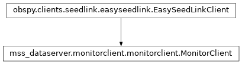

MonitorClient¶
-
class
mss_dataserver.monitorclient.monitorclient.MonitorClient(project, server_url, stations, monitor_stream, stream_lock, data_dir, event_dir, process_interval, stop_event, asyncio_loop, pgv_sps=1, autoconnect=False, pgv_archive_time=1800, trigger_thr=1e-05, warn_thr=1e-05, valid_event_thr=0.0001, felt_thr=0.0001, event_archive_timespan=48, min_event_length=2, min_event_detections=2)[source]¶ Bases:
obspy.clients.seedlink.easyseedlink.EasySeedLinkClientA custom SeedLink client
- Parameters
project (
mss_dataserver.core.project.Project) – The mss_dataserver project.server_url (str) – The URL of the server.
stations (
listofstr) – The stations to request from the seedlink server.monitor_stream (
obspy.Stream) – The stream instance used to save the incoming data.stream_lock (
threading.Lock) – The lock object used to for thread-save access of the stream data.data_dir (str) – The data directory.
event_dir (str) – The event directory.
process_interval (float) – The time interval [s] used to process the received data.
stop_event (
threading.Event) – The event used to signal the stopping of the program execution.asyncio_loop (
asyncio.EventLoop) – The asyncio event loop. Used to stop the loop if an error occurs.pgv_sps (float) – The samples per second of the PGV data stream.
autoconnect (boolean) – The
obspy.easyseedlink.EasySeedLinkClientautoconnect parameter.pgv_archive_time (float) – The length of the archive stream to keep [s].
trigger_thr (float) – The event trigger threshold [m/s].
warn_thr (float) – The event warning threshold [m/s].
valid_event_thr (float) – The threshold to declare an event as a valid event [m/s].
felt_thr (float) – The threshold above which an event is considered as a felt event [m/s].
event_archive_timespan (float) – The timespan used to load archived events [h].
min_event_length (float) – The minimum length of an event [s]. Events smaller than this value are ignored.
min_event_detections (int) – The minimum number of detections for an event to be saved in the archive.
Properties¶
capabilitiesThe server’s capabilities, parsed from
INFO:CAPABILITIES(cached).
Methods¶
|
Initialize the instance. |
|
Close the SeedLink connection. |
|
Compute the PGV values of the stream. |
Compute the resultant of the peak-ground-velocity. |
|
|
Connect to the SeedLink server. |
|
Convert the counts to physical units. |
Run the Voronoi event detection. |
|
Run the Voronoi detection with the most recent PGV data only. |
|
|
Save the event. |
Return the current event in serializable form. |
|
Get the current PGV data. |
|
Get a stream containing traces with equal length per station. |
|
|
Get an event by event id or public id. |
|
Get the detailed data of an event. |
|
Get the supplement directory of an event. |
Return the current event warning in serializable form. |
|
|
Send a SeedLink |
Return the keydata. |
|
Get the latest PGV timeseries data. |
|
|
Get the archived PGV timeseries data. |
Return the recent events in serializable form. |
|
|
Get the mappings of the requested NSLC. |
Get the metadata of the available stations. |
|
Get the stations which have triggered during the last event. |
|
Get the stations which have a PGV exceeding the threshold value. |
|
|
Check if the SeedLink server has a certain capability. |
|
A shortcut for checking for |
|
Load the event catalogs of the specified last days. |
Load data from the JSON archive file. |
|
Load data from a saved archive. |
|
|
Override the on_data callback function. |
Handle client errors. |
|
Handle termination of the client. |
|
Process the data in the monitor stream. |
|
Reconnect to the server. |
|
|
Reset the monitorclient to an initial state. |
|
Start streaming data from the SeedLink server. |
|
Save the supplement data of the event. |
|
Save the detection data of the event. |
|
Save the supplement inventory data to a json file. |
|
Save the supplement metadata to a json file. |
|
Save the PGV data supplement. |
|
Save the velocity data supplement. |
|
Save data to the JSON archive. |
Connect to the seedlink server. |
|
|
Select a stream for data transfer. |
|
A timer executing a task at regular intervals. |
Crop the archive to a specified length. |
|
|
Trim the catalogs in the library to the given timespan. |
Inheritence diagram¶
